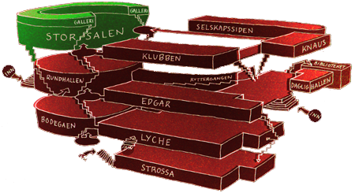

FindMyApp

Dette rommet er hjertet i studentmiljøet i Trondheim. Her velges lederen for Samfundet, UKEsjefen og ISFiT-presidenten, tre av de viktigste vervene i studentmiljøet. Storsalen er også stedet for de legendariske UKErevyene.
Visste du at?
- Tribunene i Storsalen er delt opp i fire kvadranter, hver med 90 sitteplasser. Kvadrantene er nummerert fra en til fire, hvor første kvadrant ligger lengst mot sør. Da Samfundet holdt til i Cirkus ble tradisjonen med faste plasser startet. I første kvadrant satt gamle akademikere med fruer. Grunnen til at de satt her var mest sannsynlig at dette var den minst trekkfulle plassen i salen. I andre kvadrant satt studenter som hadde med seg dame. Det ble derfor kallt forloved-kvadranten. I tredje kvadrant satt de som var kommet for å få utbytte av foredraget, og i fjerde kvadrant de som ville være nærmest ølsalget. Men tidene har forandret seg, og nå er det fritt fram hvor man kan sitte.